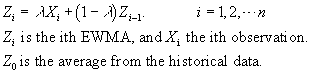
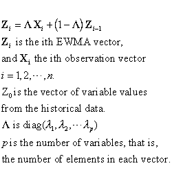
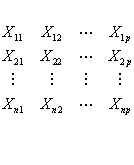
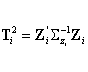
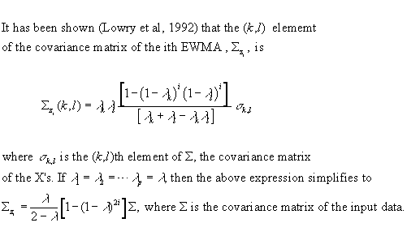
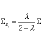
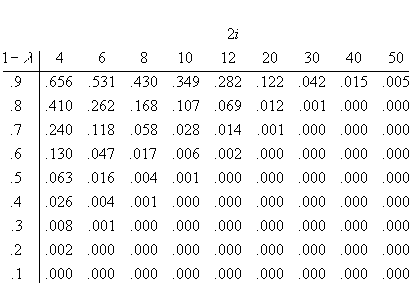
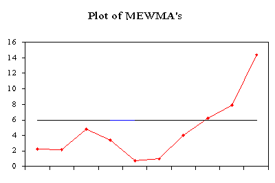

| Multivariate EWMA
Control Chart
The model for a univariate EWMA chart is
given by:

and 0 <
l .£ 1.
In the multivariate case, one can
extend this formula to

The following illustration may clarify this. There are p variables
and each variable contains n observations. The input data matrix
looks like:

The quantity to be plotted on the control chart is


There is a further simplification. If i becomes large the covariance
matrix may be expressed as:

The question is "What is large?". When we examine the formula with
the 2i in it, we observe that when 2i becomes sufficiently large
such that (1-l) 2i becomes almost
zero, then we can use the simplified formula.
The following table gives the values of (1-l)
2i for selected values of l
and i.

It should be pointed out that a well meaning computer program does not
have to adher to the simplied formula, and potential inaccuracies for low
values for l and i can thus be avoided.
Here is an example of the application of an MEWMA control chart. To
faciltate comparison with existing literature we used data from Lowry etal.
The data was simulated from a bivariate normal distribution with unit
variances and a correlation coefficient of .5. The value for l = .10 and
the values for T2i were obtained by the equation given above. The covariance
of the mewma vectors was obtained by using the non-simplified equation.
That means that for every of the i mewma control statistic, the computer
computed a covariance matrix , where i = 1, 2, ...10.The results of the
computer routine are:
*****************************************************
* Multi-Variate
EWMA Control Chart
* ******************************************************
DATA SERIES
MEWMA Vector
MEWMA
1
2 1
2 STATISTIC
-1.190 0.590
-0.119 0.059
2.1886
0.120 0.900
-0.095 0.143
2.0697
-1.690 0.400
-0.255 0.169
4.8365
0.300 0.460
-0.199 0.198
3.4158
0.890 -0.750
-0.090 0.103
0.7089
0.820 0.980
0.001 0.191
0.9268
-0.300 2.280
-0.029 0.400
4.0018
0.630 1.750
0.037 0.535
6.1657
1.560 1.580
0.189 0.639
7.8554
1.460 3.050
0.316 0.880
14.4158
VEC XBAR
MSE Lamda
1 .260
1.200 0.100
2 1.124
1.774 0.100
The UCL = 5.938 for
a = .05

|